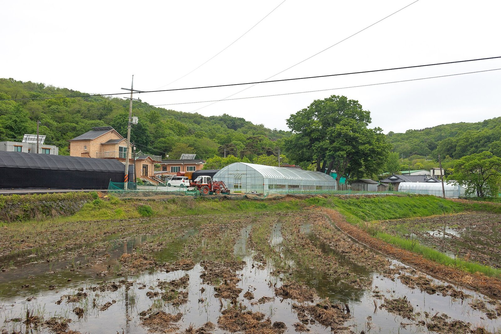
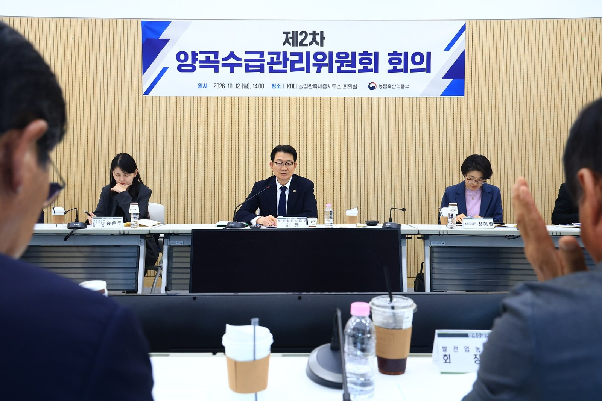
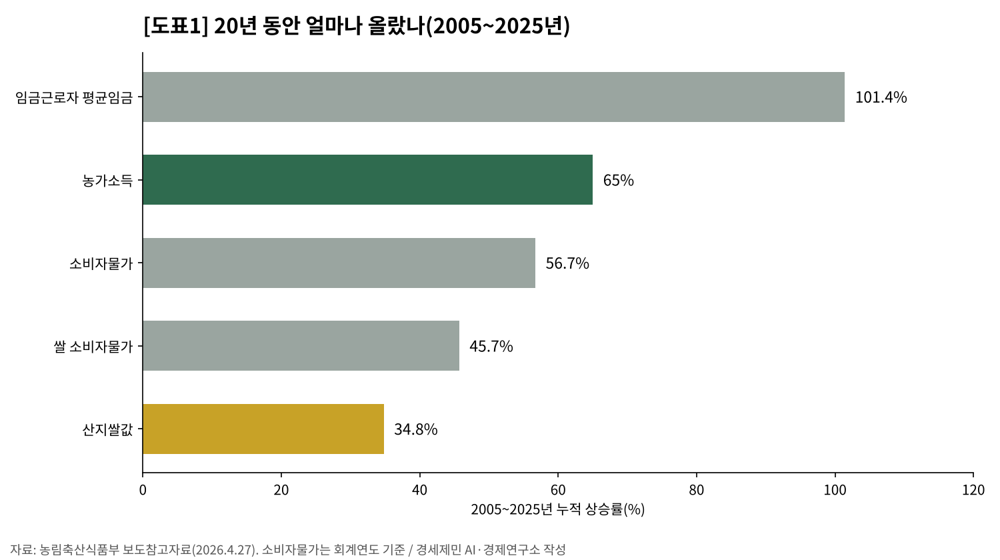
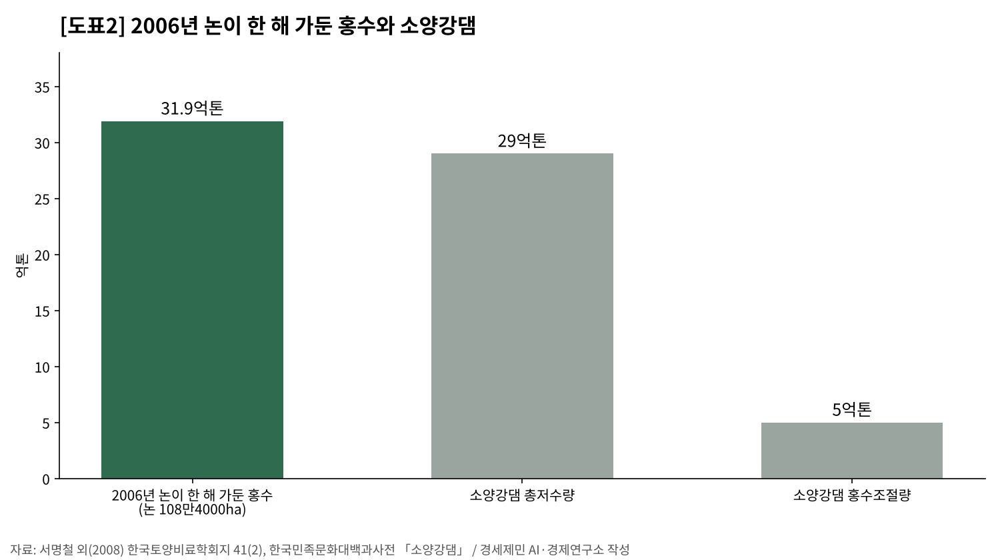
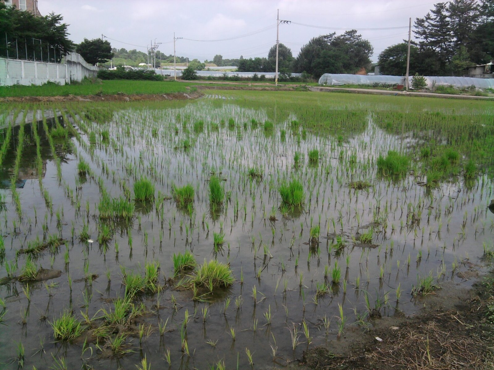
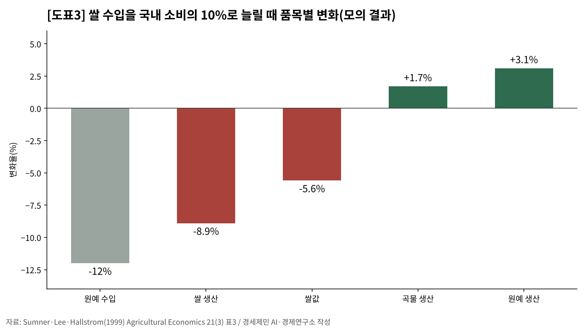
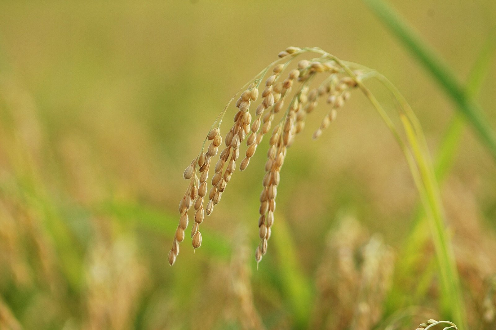
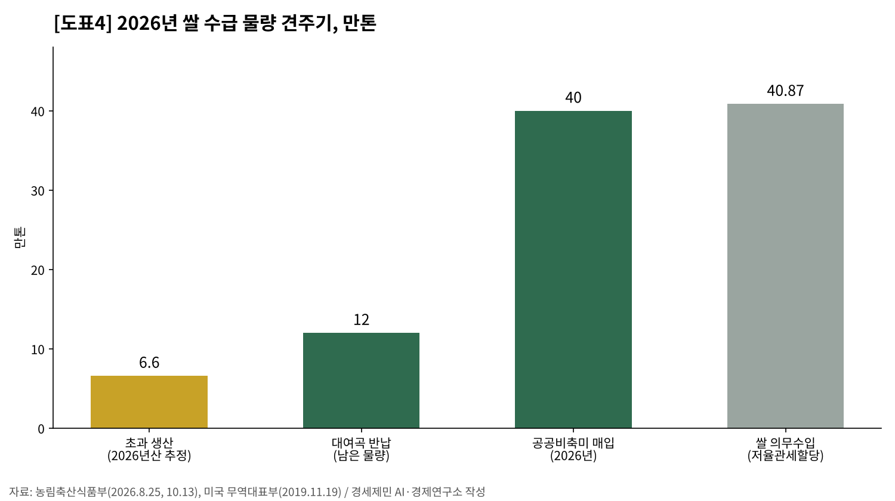
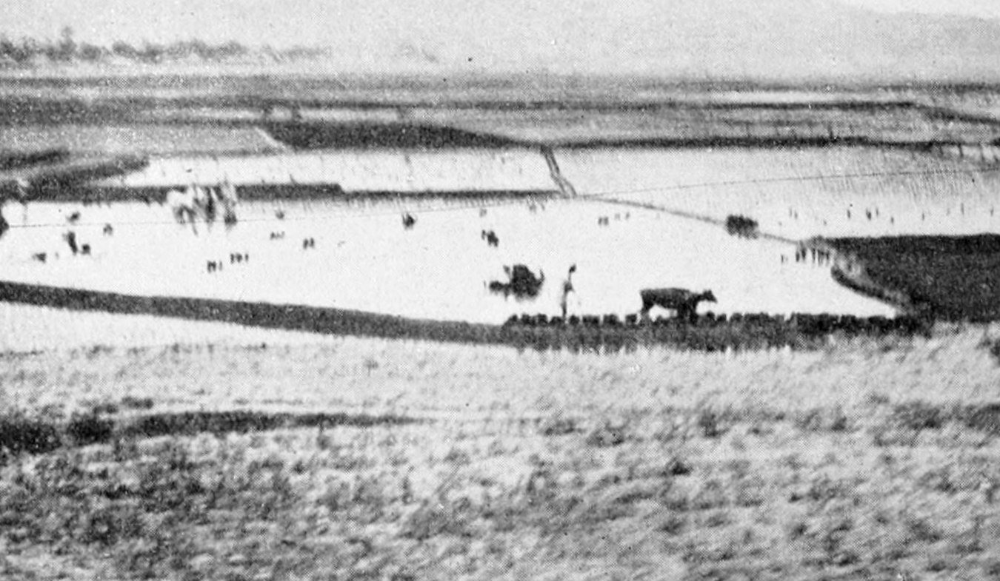

[농업 브리핑] 남는 쌀 1.9%에 벼 감산, 20년 새 30% 줄어든 논의 홍수·식량 기능
전략작물직불 4196억원, 벼 대신 다른 작물로
2006년 논 면적 기준 홍수 저류 연 31억9000만톤
2006~2008년 국제 쌀값 상승의 45%는 각국 가격 격리 몫이라는 추정
쌀값을 두고 해마다 농민과 소비자가 맞선다. 쌀값이 오르면 소비자가 힘들다 하고, 내리면 농민이 힘들다 한다. 그 다툼에 가려 보이지 않는 것이 있다. 줄어드는 논이다. 논은 2006년 108만4000ha에서 2025년 75만6000ha로 30% 줄었다.
올해 쌀 예상생산량(9월 조사)은 351만8000톤이다. 2020년(350만7000톤) 이후 6년 만에 가장 적다. 국가데이터처는 10월 8일 이 수치를 내며 벼 재배면적이 준 까닭으로 전략작물직불 같은 정책을 꼽았다. 논에 벼를 덜 심게 하는 정책이 이미 줄어든 논 위에 더해지고 있다.

남는 쌀 1.9%에 덜 심기 처방
농림축산식품부는 10월 13일 올해 쌀이 수요보다 6만6000톤 남는다고 밝혔다. 가공용으로 미리 떼어 둔 수급조절용 벼 1만1000ha를 뺀 생산량 346만톤의 1.9%다. 산지쌀값은 10월 25일 20kg 5만7454원으로 1년 전과 거의 같다.
지난해 8월 개정한 양곡관리법은 올해 8월 27일 시행됐다. 초과 생산이 생산량의 3~5% 범위에서 위원회가 정한 기준을 넘거나, 쌀값이 평년보다 5~8% 범위에서 정한 기준 이상 떨어지면 정부가 대책을 세워야 한다. 올해는 둘 다 걸리지 않는다. 7~9월 쌀값은 평년보다 16.1% 높았다.
정부가 감산을 고르는 까닭도 숫자에 있다. 1인당 쌀 소비량은 2025년 53.9kg으로 1년 새 3.4% 줄었다. 정부는 올해도 공공비축미 40만톤을 사들이고 벼 매입자금 3조9000억원을 푼다. 덜 심으면 이 부담이 준다. 다만 떡·주정 같은 사업체의 쌀 소비는 106만5324톤으로 22.0% 늘었다.
법은 사후 매입에 사전 면적 조정을 더했다. 정부가 해마다 적정 벼 재배면적을 정한다. 논에 벼 대신 다른 작물을 심으면 주는 전략작물직불 예산은 지난해 2440억원에서 올해 4196억원이 됐다. 올해 벼 재배면적은 67만69ha로 1년 새 1.1% 줄었다.

20년 오름폭, 소비자 쌀값 45.7%·산지쌀값 34.8%
농식품부가 4월 27일 낸 자료를 보면 2005~2025년 임금근로자 평균임금은 101.4% 올랐다. 같은 기간 소비자물가는 56.7%, 쌀 소비자물가는 45.7%, 산지쌀값은 34.8% 올랐다. 물가를 빼고 보면 소비자 쌀값은 약 7%, 산지쌀값은 약 14% 내린 셈이다.
임금이 두 배가 되는 동안 쌀은 물가만큼도 오르지 않았다. 소비자에게 쌀은 20년 전보다 싸졌다. 산지쌀값은 소비자 쌀값보다도 덜 올랐다. 산지 쪽이 더 처졌다.
벼농사로 남는 돈도 적다. 국가데이터처 생산비조사에서 2025년 논 10a에서 남은 소득은 73만6304원이다. 1ha로 치면 736만3040원이다.
최저임금 1년치 2515만5240원을 벌려면 논 3.4ha를 지어야 한다. 노동시간이 아니라 경작 규모로 견준 값이다. 쌀값이 오른 해의 값이 이렇다. 쌀값이 낮던 2024년 소득으로 셈하면 그해 최저임금 1년치에 4.3ha가 든다.

논 면적 기준 홍수 저류 연 31억9000만톤
논은 둑으로 둘러싼 얕은 저수지다. 농촌진흥청 농업과학기술원 연구진은 국내 논 370곳의 논둑 높이를 재서 논이 홍수 때 가둘 수 있는 물을 셈했다. 2006년 논 108만4000ha로 셈하면 한 해 평균 31억9000만톤이다. 한 해 합계가 소양강댐 총저수량 29억톤보다 많다.
같은 물을 댐으로 막으려면 2006년 기준 단가(톤당 1만3891.8원)로 44조3389억원이 든다. 해마다 버는 돈이 아니라 대신 지을 때 드는 비용이다. 논 면적에 비례해 셈한 값이라 논이 줄면 이 능력도 준다.
시장은 이 값을 쌀값에 넣지 않는다. 경제학은 이를 외부효과라 부른다. 값을 치르지 않고 모두가 누리는 공공재다. 정부가 논 농가에 주는 공익직불금은 그 몫을 일부 치르는 값이다.
기후위기는 쌀 수확을 더 출렁이게 한다. 1977~2008년 8개 도 자료로 추정한 연구가 있다. 기온이 2℃ 오르고 강수가 60mm 늘면 벼 평균 수량은 8% 남짓 늘지만 수량 변동성은 5.2~19.4% 커진다. 저자는 관측 범위를 넘는 큰 기온 상승에는 이 추정이 맞지 않는다고 덧붙였다.
논은 메탄을 내놓는다. 감산을 찬성하는 쪽이 드는 까닭 가운데 하나다. 메탄은 물관리로도 줄일 수 있다. 한 시험 포장에서 중간물떼기를 20일로 늘리고 완효성 비료를 함께 쓰자 메탄은 12.3% 줄고 수량은 1.9% 늘었다. 논을 줄이지 않고 배출을 줄일 길도 있다는 뜻이다.

벼 빠진 땅과 일손, 원예로 번지는 충격
대니얼 섬너 미국 캘리포니아대 데이비스캠퍼스 교수 연구진은 1999년 논문에서 한국의 쌀 수입을 소비의 10%로 늘리는 경우를 모의했다. 쌀 생산은 8.9% 줄고 원예작물 생산은 3.1% 는다는 결과를 냈다. 수입 확대와 감산은 다르지만, 벼에서 빠진 땅과 일손이 다른 작물로 옮겨 가는 경로는 같다.
땅과 일손이 옮겨 가 쌀의 충격을 나눠 졌다. 옮겨 가지 못하면 쌀값이 약 50% 떨어진다는 계산도 함께 냈다. 충격을 나눠 진 대가로 원예작물 값은 4.4% 내렸다. 쌀값이 덜 떨어진 몫을 다른 농사가 떠안은 것이다.
감산은 의도와 거꾸로 가기도 한다. 일본 쌀 농가 1950호를 분석한 연구가 있다. 생산조정 협조를 요건으로 삼았던 인정농업자는 그렇지 않은 농가보다 논에 벼를 심는 비율이 낮았다.
효율 높은 농가에서 6.0%포인트, 효율 낮은 농가에서 3.2%포인트다. 벼를 잘 짓는 농가일수록 벼에서 멀어지는 경향이었다. 저자는 이를 정책 의도와 반대라고 평가했다.


위기 때 닫히는 쌀 수출 창구
2006~2008년 국제 쌀값이 치솟자 수출국은 수출을 막고 수입국은 관세를 낮췄다. 저마다 제 나라 값을 지키려는 가격 격리였다. 윌 마틴 세계은행 연구원과 킴 앤더슨 애들레이드대 교수는 2011년 토론문에서 이 격리 조치가 그 시기 국제 쌀값 상승의 45%를 설명한다고 추정했다.
고려대 연구진이 8개국의 2002~2016년 자료를 분석했더니 쌀 자급률이 높은 나라일수록 쌀값 변동성이 낮았다. 다만 자급률이 식량안보지수를 끌어올린다는 결과는 통계적으로 뚜렷하지 않았다.
국민의 생각은 분명하다. 한국농촌경제연구원 연구진이 2012년 20~59세 2400명에게 농업의 공익적 가치를 물었다. 돈을 내서라도 지키겠다는 응답은 식량안보가 68.5%로 가장 높았다.
한국은 해마다 쌀 40만8700톤을 5% 관세로 들여온다. 세계무역기구에 약속한 물량이고, 이 가운데 13만2304톤은 2019년 합의로 미국산에 보장한 몫이다. 올해 남는 쌀의 6배가 넘는다. 그 밖의 수입에는 513% 관세가 붙는다. 수입 물량은 협정이 정하고, 덜 심는 몫은 국내 논이 진다.


남는 쌀 6만6000톤은 생산량의 1.9%다. 논은 20년 새 30% 줄었다. 그 논이 홍수를 가두고, 위기 때 국민을 먹이고, 다른 농사의 균형을 받친다. 인공지능이 일을 바꾸는 시대에도 쌀은 땅과 물과 사람이 짓는다. 쌀은 남는다. 줄어드는 것은 논이다.

참고문헌
공식 발표자료
- 국가데이터처 농어업통계과, 「2026년 쌀 예상생산량조사 결과」, 보도자료, 2026년 10월 8일, https://mods.go.kr/board.es?mid=a10301000000&bid=228&act=view&list_no=447409
- 국가데이터처, 「산지쌀값조사 — 정곡(일반계, 20kg, 비추정평균가격), 월」, 국가통계포털 통계표 DT_1EI10122, 2026년 10월 27일 갱신, https://kosis.kr/statHtml/statHtml.do?orgId=101&tblId=DT_1EI10122
- 국가데이터처·농림축산식품부, 「경지면적 추이」(경지면적조사), 지표누리, 2026년 10월 16일 갱신, https://www.index.go.kr/unify/idx-info.do?idxCd=1287
- 국가데이터처, 「2025년 양곡소비량조사 결과」, 보도자료, 2026년 1월 22일(2026년 3월 17일 일부 수정), https://mods.go.kr/board.es?mid=a10301000000&bid=230&act=view&list_no=443168
- 국가데이터처 농어업동향과, 「2025년산 논벼(쌀) 생산비조사 결과」, 보도자료, 2026년 3월 27일, https://www.korea.kr/briefing/pressReleaseView.do?newsId=156751371
- 농림축산식품부 식량정책과, 「쌀 가격 급등락 없도록 수급 안정 총력... 쌀값 상승폭 커 보여도 회복 측면 고려 필요」, 보도참고자료, 2026년 4월 27일, https://www.mafra.go.kr/bbs/home/792/577754/artclView.do
- 농림축산식품부 식량정책과, 「양곡관리법 시행, 선제적 수급 조절 정책을 통한 시장 안정 도모」, 보도자료, 2026년 8월 26일, https://www.mafra.go.kr/bbs/home/792/578852/artclView.do
- 「양곡관리법 시행령」 제16조의2(수급불안의 범위), 대통령령 제36617호, 2026년 8월 27일 시행, 국가법령정보센터, https://www.law.go.kr/법령/양곡관리법시행령
- 농림축산식품부 식량정책과, 「2026년 쌀 수급안정대책 마련」, 보도자료, 2026년 10월 13일, https://www.mafra.go.kr/bbs/home/792/579408/artclView.do
- 미국 무역대표부(USTR), "United States and South Korea Reach Agreement on Guaranteed Market Access for American Rice", 보도자료, 2019년 11월 19일, https://ustr.gov/about-us/policy-offices/press-office/press-releases/2019/november/united-states-and-south-korea
연구보고서와 논문
- 한국농촌경제연구원 농업관측센터, 『농업관측 쌀 2026년 11월호』 통권 제1415호, 2026년 10월 26일, https://aglook.krei.re.kr/main/uObserveMonth/OVR0000000070
- 서명철·강기경·현병근·윤홍배·엄기철, 「농업의 홍수조절기능과 수자원함양기능 계량화 및 가치평가에 관한 연구」, 『한국토양비료학회지』 41(2), 143~152쪽, 2008, https://koreascience.kr/article/JAKO200821161989920.pdf
- 김용렬·정학균·허주녕, 「농업·농촌의 공익적 가치에 대한 경제적 평가」, 『농촌계획』 20(4), 101~112쪽, 2014, https://koreascience.kr/article/JAKO201403359906125.pdf
- 김태화·김원용·양승룡, 「식량자급률은 식량안보를 강화시키는가?」, 『농촌경제』 42(4), 69~88쪽, 2019, https://ageconsearch.umn.edu/record/330774/files/RE42-4-04.pdf
- 김만근·Arwin Pang, "Climate Change Impact on Rice Yield and Production Risk", Journal of Rural Development 32(2), 17~29쪽, 2009, https://repository.krei.re.kr/bitstream/2018.oak/19219/1/CLIMATE%20CHANGE%20IMPACT%20ON%20RICE%20YIELD%20AND%20PRODUCTION%20RISK.pdf
- 장은빈 외, 「완효성 비료를 시용한 논에서의 물관리에 따른 온실가스 배출량 평가」, 『한국환경농학회지』 42(2), 112~120쪽, 2023, https://koreascience.kr/article/JAKO202322136665352.pdf
- Daniel A. Sumner·Hyunok Lee·Daniel G. Hallstrom, "Implications of trade reform for agricultural markets in northeast Asia: a Korean example", Agricultural Economics 21(3), 309~322쪽, 1999, https://ageconsearch.umn.edu/record/175206/files/agec1999v021i003a008.pdf
- Will Martin·Kym Anderson, "Export Restrictions and Price Insulation During Commodity Price Booms", American Journal of Agricultural Economics 94(2), 422~427쪽, 2012(수치는 같은 제목 CEPR 토론문 8494호, 2011), https://repec.cepr.org/repec/cpr/ceprdp/DP8494.pdf
- Kazuo Ogawa, "Inefficiency in rice production and land use: a panel study of Japanese rice farmers", Japanese Economic Review 71, 641~669쪽, 2020, https://www.rieti.go.jp/jp/publications/dp/17e020.pdf
그 밖의 자료
- 한국학중앙연구원, 「소양강댐」, 『한국민족문화대백과사전』, https://encykorea.aks.ac.kr/Article/E0030190
[사진 출처]
- [사진1] SRA Jeffrey Allen(미 공군), 미 국방부 사진번호 981008-F-2171A-502, 위키미디어 공용, 1998년 촬영, 퍼블릭 도메인, https://commons.wikimedia.org/wiki/File:South_Koreans_harvest_rice_in_the_Demilitarized_Zone_of_Korea,_1988.JPEG
- [사진2] 농림축산식품부, 「2026년 쌀 수급안정대책 마련」 보도자료 첨부 「제2차 양곡수급관리위원회 회의 사진」, 2026년 10월 13일, 공공누리 제1유형, https://www.mafra.go.kr/bbs/home/792/579408/artclView.do
- [사진3] Nt, "Rice Paddy in Ganghwa Island 1.jpg", 위키미디어 공용, 2024년 5월 7일 촬영, CC0, https://commons.wikimedia.org/wiki/File:Rice_Paddy_in_Ganghwa_Island_1.jpg
- [사진4] Salamander724, "Korean Rice Paddy Field.jpg", 위키미디어 공용, 2013년 7월 1일 촬영, 퍼블릭 도메인, https://commons.wikimedia.org/wiki/File:Korean_Rice_Paddy_Field.jpg
- [사진5] Park Misoo, "Byeo (Japonica rice).jpg", 위키미디어 공용(픽사베이 원본), 2005년 9월 25일 촬영, CC0, https://commons.wikimedia.org/wiki/File:Byeo_(Japonica_rice).jpg
- [사진6] F. H. King, 『Farmers of Forty Centuries』(1911) 369쪽 사진, 위키미디어 공용, 퍼블릭 도메인, https://commons.wikimedia.org/wiki/File:Farmers_of_forty_centuries_-_Korean_rice_fields_being_transplanted.jpg
© 경세제민 AI·경제 연구소. 인용할 때는 출처를 밝혀 주십시오.